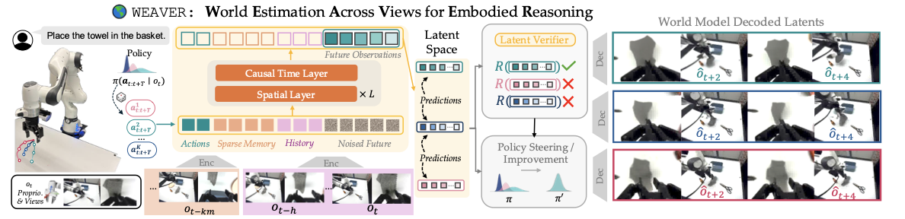
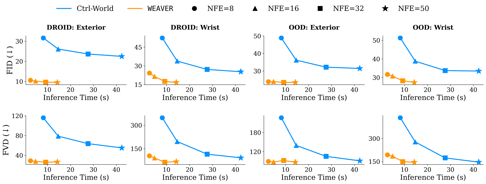
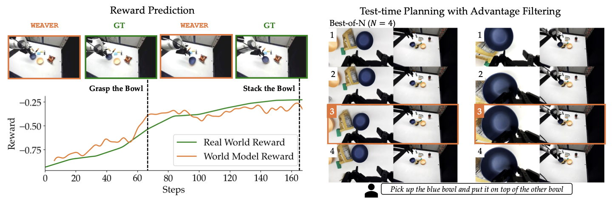
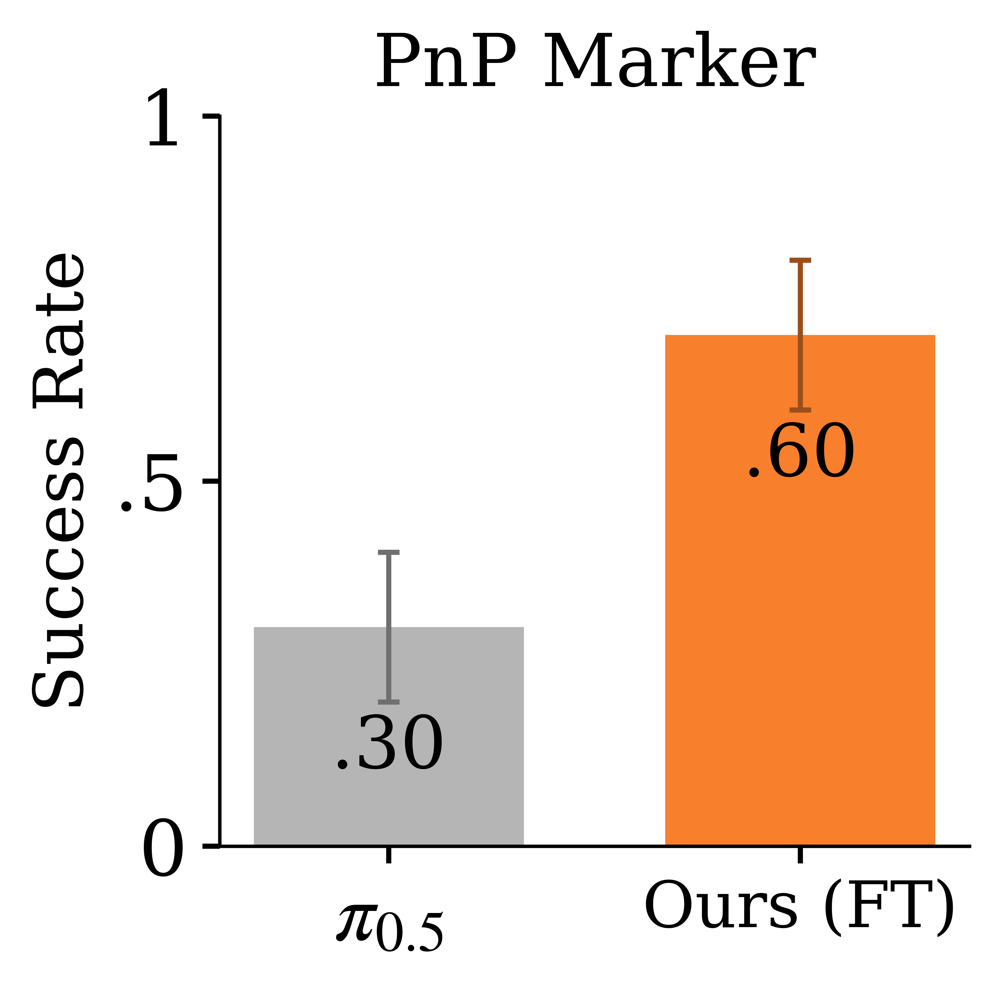
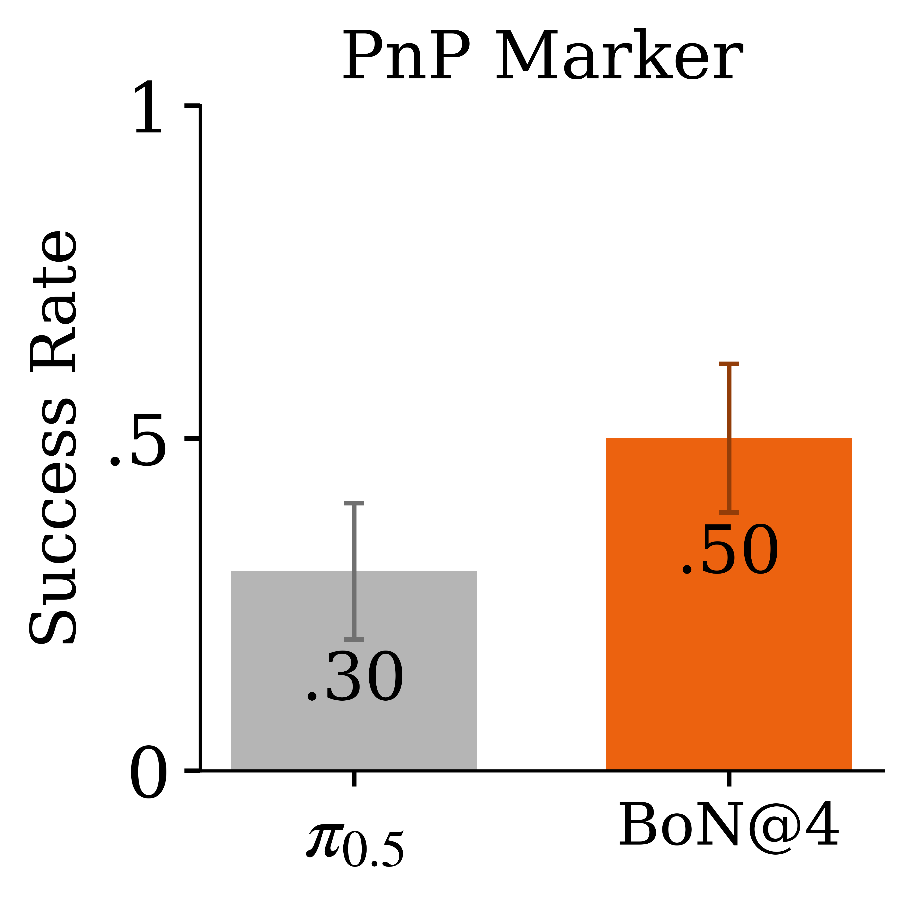
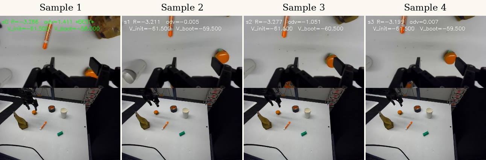

(i) Fidelity
Physically accurate predictions that correlate with reality;
WEAVER generates multiple views used by
modern visuomotor policies.
WEAVER, Better, Faster, Longer: An Effective World Model
for Robotic Manipulation
Anonymous Institution(s)

WEAVER is an action-conditioned latent world model for
long-horizon robot manipulation. It predicts future latent states,
decodes future observations when needed, and plans in latent space.
The key design decisions are:
Architecture and design. WEAVER
predicts multiple views and robot proprioceptive state. The
sparse long-term memory preserves scene context across occlusions,
short-term history captures recent motion, and an efficient
spatio-temporal Transformer generates future latents conditioned
on the action tokens.
Training and fast inference. The latent dynamics model is trained with flow matching and Diffusion Forcing, which supports consistent long-horizon prediction with different noise levels across future steps. At inference time, KV caching and rectified-flow post-training reduce the cost for planning.
Accurate reward and value estimation. To
efficiently score action chunks without decoding latents into
images or querying an external VLM judge, WEAVER
uses a lightweight reward head that operates directly on imagined
latent states and the language instruction. A critic estimates
returns beyond the imagined horizon.
WEAVER achieves better performance than Ctrl-World on DROID
validation and out-of-distribution (OOD) task data while using significantly lower inference time.
As we decrease the number of function evaluations (NFE) to reduce
latency, Ctrl-World's quality decreases more significantly than
WEAVER; both models incur the highest error when
predicting wrist-camera viewpoints.

WEAVER's latent reward is trained to match RoboMeter's task progress rewards.
On OOD real trajectories, the distilled reward model can distinguish action chunks using the
predicted advantage. We observe that the segment with highest-advantage action sample corresponds
to the best imagined outcome.

By jointly satisfying (i) fidelity, (ii) consistency, and (iii) efficiency,
WEAVER supports various downstream world-model applications:
policy evaluation, policy improvement, and test-time planning.
To evaluate policies offline, we replay recorded real-world action
trajectories open-loop in WEAVER and label the imagined
rollouts. This turns the world model into a sandbox for ranking
policies without additional robot execution. We show that
pretrained world models often underestimate policy success, while
WEAVER better matches real rollouts than Ctrl-World.
The setting is difficult because rollouts span up to 40 seconds and require
long-horizon visual prediction; Pour Beans is especially challenging
due to granular dynamics. After finetuning, WEAVER-FT
further improves agreement and is better at capturing outcomes across policies.

For policy improvement, WEAVER samples candidate
action chunks, simulates their long-horizon outcomes, and estimates the advantage using the latent reward and critic heads. Only
high-advantage rollouts are distilled back into the base policy,
avoiding updates from plans predicted to be worse than the current
behavior. We observe that finetuning π0.5 with real and
synthetic data generated by WEAVER yields the strongest success rates.


At test time, WEAVER performs single-chunk best-of-N search: it samples
multiple candidate action chunks, imagines their outcomes, and executes the one
with the highest predicted advantage. To reduce latency, we post-train the world
model with rectified flows, enabling fast latent rollouts and reward scoring.
This makes test-time planning practical without pixel reconstruction or external
VLM-as-a-judge scoring.


@article{anonymous2026weaver,
title={WEAVER: Efficient World Models for Robot Video Prediction},
author={Anonymous Author(s)},
journal={Under review},
year={2026}
}